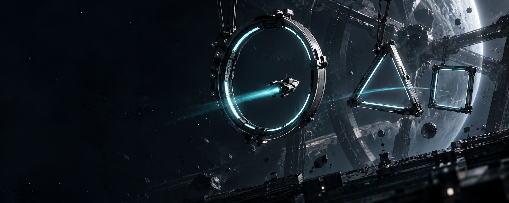

Thrust in any direction
Acceleration and counter-thrust create a readable skill to learn and improve.

This is our current target date, not a confirmed store release. The prototype below is available to play now.
Clear the three gates, dock the craft and improve your time. Use WASD or arrow keys on a keyboard; on touch, drag on the arena to thrust.
Drift Protocol is a game concept we are developing around a simple challenge: steering is easy, but stopping and taking the cleanest route takes practice. The public web demo is a focused prototype, not a release build.
Acceleration and counter-thrust create a readable skill to learn and improve.
Obstacle placement makes speed, braking and line choice matter.
A short level and best-time tracker invite another attempt.
Design, scope and future platform plans may change as the game develops.
Echo-7 is a deliberately small slice of the concept. It lets us focus on whether movement feels satisfying before expanding the scope.
Thrust builds speed. Releasing input does not stop the craft, so deliberate counter-thrust is part of every clean turn.
The alternating route asks players to read ahead, brake early and choose a line, without a long tutorial.
We are looking for notes on responsiveness, difficulty, clarity and whether a second attempt feels rewarding. The browser demo is an adaptation of the in-development game, so visuals and features may change.
Rate the prototype, give it a like if you enjoyed it, and leave a note for the team. Feedback is sent privately to Lockdown Studios; comments are not published on the site.
Want to test future mobile builds? Join the testing interest pool ↗
Play another run or join our mobile testing interest pool for future builds.